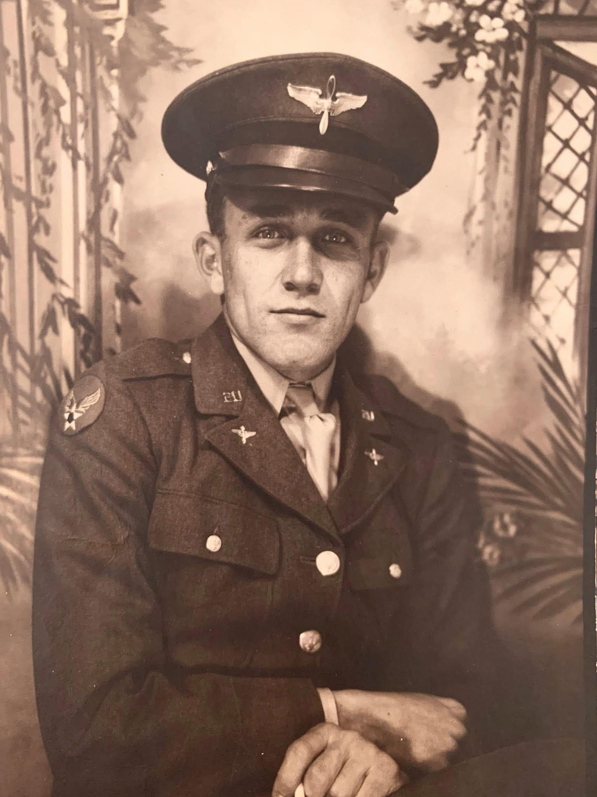

The story behind 51
A legacy of curiosity
Horace Norman Walker · World War II pilot
My great-grandfather, Horace Norman Walker, flew a P-51 Mustang during World War II. Although he passed away before I was born, the stories of his life sparked my interest in aircraft, speed, space exploration, mathematics, and engineering.
The number 51 is a tribute to him and a reminder of where that curiosity began.